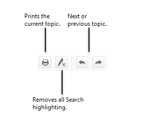

ARTEMIS Dashboard gives you a view into the state of the articles being processed by ARTEMIS. You can search for specific articles, see which tasks are in progress or complete, and look at Web Service calls sent and received.
The Online Help system is easy to use. If you've used a website, you can navigate Help with ease.
The Contents and Index tabs help you find topics. The Glossary tab contains definitions of terms we use in ARTEMIS Dashboard.
The Help system features a full-text search. That means that while we've added keywords to topics, you can also use other terms to search.
The Help system highlights each term producing a hit in the topic, making it easy to find. Use the Remove all Search highlighting button (see below) to view without highlights.

Home.htm | Copyright © 2015 Dartmouth Journal Services All Rights Reserved.